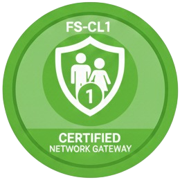
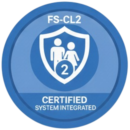
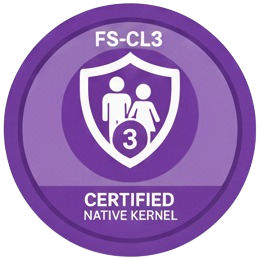

The open-source protocol for native, kernel-level safety across Windows, Linux, Smart TVs, and Consoles.
Industry-standard tiers for cross-platform compliance.

Compliance for legacy devices and closed IoT ecosystems via the X-PP Bridge.

Native system-service support and Remote Mode Signaling (RMS).

Full integration into OS Kernel with hardware-backed security.